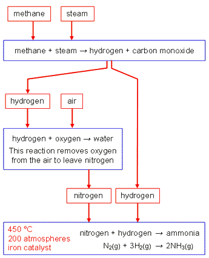

The Haber Process is used to manufacture ammonia (commonly used in fertilisers). Ammonia is made up of hydrogen and nitrogen (HN3). The hydrogen and nitrogen are passed over an iron catalyst at a temperature of 450C and a pressure of 200 atmospheres. Some of the hydrogen and nitrogen reacts to form ammonia but, because the reaction is reversible, some of the ammonia produced will break down again into nitrogen and hydrogen. The newly formed mixture of hydrogen, nitrogen, and ammonia will cool allowing the ammonia to liquify and be removed from the remaining gases. The leftover nitrogen and hydrogen is recycled.
The reaction between nitrogen and hydrogen is exothermic. A high reaction temperature would give a fast rate of reaction but a low yield of ammonia. A low reaction temperature would give a high yield of ammonia but a very slow reaction. In practice, a moderate temperature is used (the previously mentioned 450C). A high pressure encourages a high yield of ammonia. The iron catalyst increases the rate of reaction. These reaction conditions are chosen to produce a reasonable a yield of ammonia quickly. Even so, only some of the hydrogen and nitrogen react together to form ammonia.
Fertilisers are used to replace the essential elements in soil that are used up by plants as they grow. Plants absorb these chemicals through their roots, so fertilisers must be soluble in water. To grow well, plants need nitrogen, N, phosphorus, P, and potassium, K. NPK fertilisers contain compounds of all three of these elements. NPK fertilisers are formulations of various salts that are mixed together to give the appropriate percentage of each element. The PNK rating of a fertiliser consists of three numbers, e.g. 16-4-10: The first number gives the percentage of nitrogen, the second number relates to the amount of phosphorus, and the third number relates to the amount of potassium. Ammonia is an alkaline gas that dissolves in water. It is mainly used in the production of fertilisers, to increase the nitrogen content of the soil. Ammonia: -Can be oxidised to produce nitric acid, -Can neiitralise nitric acid to produce ammonium nitrate (NH3 (aq) + HNO3 (aq) --> NH4NO3 (aq)).
Ammonium nitrate is a fertiliser rich in nitrogen. Nitrogen-based fertilisers are important chemicals because they increase the yield of crops. Potassium chloride and potassium sulphate are soluble and can be used directly as fertilisers. Phosphate rock contains high levels of phosphorus compounds. However, these compounds are insoluble, so they cannot be used directly as fertilisers. The phosphate rock can be processed to make useful new products: -It can be treated with nitric acid to produce phosphoric acid and calcium nitrate. Phosphoric acid is then neutralised with ammonia to produce ammonium phosphate. -It can be reacted with sulphuric acid to make single superphosphate (a mixture of calcium phosphate and calcium sulphate). -It can be reacted with phosphoric acid to make triple superphosphate (calcium phosphate).